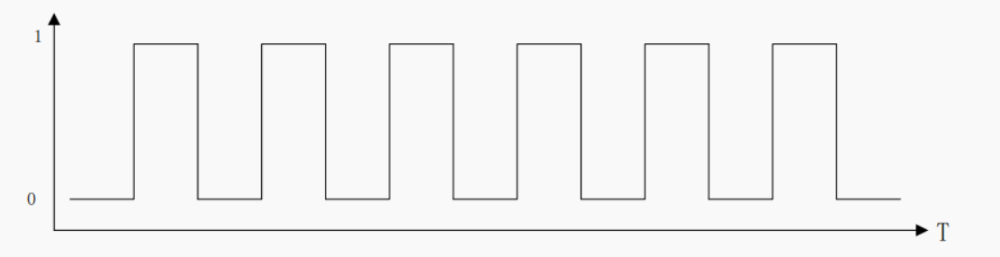
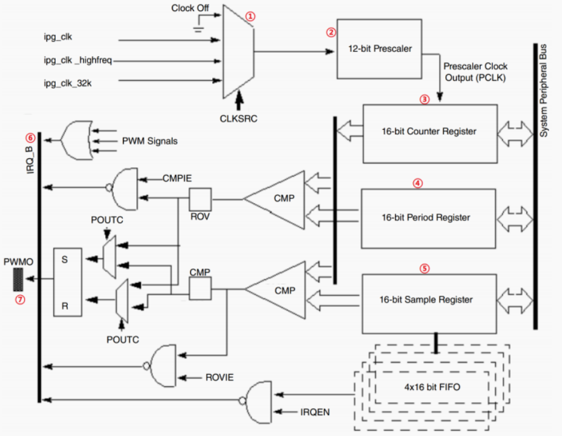
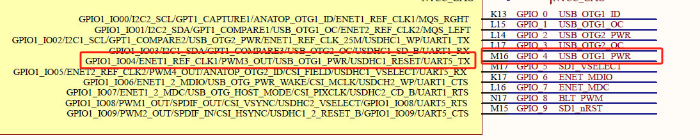
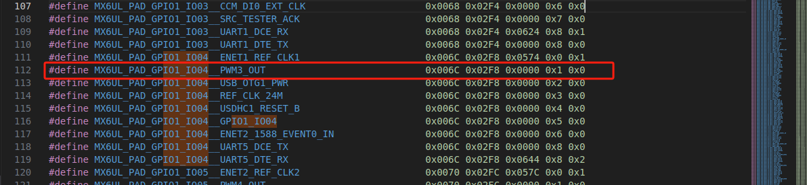

驱动开发-PWM
PWM(Pulse Width Modulation)
基础概念与理论
1.什么是 PWM？它的主要参数是什么？

PWM (Pulse Width Modulation) 即脉冲宽度调制，是一种通过控制数字信号在一个周期内高电平时间（脉宽）与周期时间之比（占空比）来模拟连续电平的技术。
- 主要参数：
- 周期 (Period) / 频率 (Frequency)： 一个完整 PWM 波形的持续时间 (
T)。频率f = 1 / T。 - 占空比 (Duty Cycle)： 高电平时间 (
Ton) 占整个周期 (T) 的百分比 (D = (Ton / T) * 100%)。 - 极性 (Polarity)： PWM 信号有效电平（Active Level）是高电平有效 (Normal) 还是低电平有效 (Inversed)。
- 周期 (Period) / 频率 (Frequency)： 一个完整 PWM 波形的持续时间 (
2.应用场景
- 电机控制： 调节速度和方向（如直流电机、步进电机）。
- LED 调光： 控制亮度（通过改变平均电流）。
- 电源管理： DCDC 转换器输出电压调节（通过控制开关管导通时间）。
- 音频： 简单的 D 类放大器。
- 伺服控制： 控制舵机角度（特定脉宽范围对应特定角度）。
- 模拟信号生成： 配合低通滤波器可产生模拟电压。
3.调试工具和方法有哪些？
- 逻辑分析仪 / 示波器： 直接测量 PWM 引脚的实际输出波形，验证周期、占空比、极性是否正确。最直接有效！
- Sysfs 接口： 通过读写 sysfs 文件手动控制 PWM，测试基本功能。
4.面试准备建议
- 理解 > 背诵： 确保真正理解 PWM 原理、Linux 驱动模型和框架思想。
- 动手实践： 在开发板或 QEMU 上实际编写、加载、调试一个简单的 PWM 驱动（即使只是操作虚拟寄存器打印信息）。编写一个 Consumer 驱动来使用它。
- 阅读内核源码： 精读
drivers/pwm/core.c和include/linux/pwm.h。选择一个简单的实际 PWM 驱动 (如pwm-meson.c,pwm-sun4i.c) 学习其实现。 - 关注设备树： 熟练掌握 Provider 和 Consumer 节点写法及
#pwm-cells含义。 - 强调
.apply： 重点理解现代.applyAPI 的原子性和优势，了解如何迁移旧驱动。 - 调试思维： 面试官喜欢问“如果…不行，你会怎么调试？” 准备好思路（检查时钟/复位、DT、sysfs、打印、仪器测量）。
- 了解限制： 清楚阐述如何处理硬件精度和范围限制。
I.MX6ULL外设
《I.MX6ULL 参考手册》的第 40 章“Chapter 40 Pulse Width Modulation(PWM)”，一共有 8 路 PWM 信号，每个 PWM 包含一个 16 位的计数器和一个 4 x 16 的数据 FIFO
①、此部分是一个选择器，用于选择 PWM 信号的时钟源，一共有三种时钟源：ipg_clk、ipg_clk_highfreq 和 ipg_clk_32k。
②、这是一个 12 位的分频器，可以对①中选择的时钟源进行分频。
③、这是 PWM 的 16 位计数器寄存器，保存着 PWM 的计数值。
④、这是 PWM 的 16 位周期寄存器，此寄存器用来控制 PWM 的频率。
⑤、这是 PWM 的 16 位采样寄存器，此寄存器用来控制 PWM 的占空比。
⑥、此部分是 PWM 的中断信号，PWM 是提供中断功能的，如果使能了相应的中断的话就会产生中断。
⑦、此部分是 PWM 对应的输出 IO，产生的 PWM 信号就会从对应的 IO 中输出，I.MX6UALPHA 开发板的 LCD 背光控制引脚连接在 I.MX6U 的 GPIO1_IO8 上，GPIO1_IO8 可以复用为 PWM1_OUT。
设备树下的PWM控制器节点
I.MX6ULL 有 8 路 PWM 输出，因此对应 8 个 PWM 控制器，所有在设备树下就有 8 个PWM 控制器节点。这 8 路 PWM 都属于 I.MX6ULL 的 AIPS-1 域，这 8 路 PWM 的设备树节点内容都是一样的，除了 reg 属性不同(毕竟不同的控制器，其地址范围不同)。
实验使用的GPIO1_IO04 这个引脚来完成 PWM 实验，而 GPIO1_IO04 就是 PWM3 的输出引脚，所以这里我们就以 PWM3 为例进行讲解
imx6ull.dtsi 文件中的 pwm3 节点信息如下：
1 | pwm3: pwm@02088000 { /*pwm：设备类型 |
1. 节点标识
1 | pwm3: pwm@02088000 |
pwm3：节点标签（label），用于其他节点引用此 PWM 控制器pwm@02088000：节点名称，表示：pwm：设备类型02088000：寄存器基地址（16进制）
2. 兼容性（compatible）
1 | compatible = "fsl,imx6ul-pwm", "fsl,imx27-pwm"; |
- 驱动匹配优先级：
- 首选专用驱动：
fsl,imx6ul-pwm（i.MX6UL 优化版本） - 备选通用驱动：
fsl,imx27-pwm（兼容 i.MX27 系列的通用 PWM 驱动）
- 首选专用驱动：
- 作用：内核根据此属性加载对应的 PWM 驱动程序
3. 寄存器映射（reg）
1 | reg = <0x02088000 0x4000>; |
- 寄存器基地址：
0x02088000 - 地址范围：
0x4000（16KB 空间） - 硬件关联：对应 i.MX6UL 手册中的 PWM3 寄存器组
4. 中断配置（interrupts）
1 | interrupts = <GIC_SPI 85 IRQ_TYPE_LEVEL_HIGH>; |
- 中断类型：
GIC_SPI（共享外设中断） - 中断号：
85 - 触发方式：
IRQ_TYPE_LEVEL_HIGH（高电平触发） - 用途：支持 PWM 捕获等需要中断的功能
5. 时钟配置（关键问题）
1 | clocks = <&clks IMX6UL_CLK_PWM3>, |
- 问题：两个时钟源都指向同一个时钟
IMX6UL_CLK_PWM3 - 应有配置：
1
2clocks = <&clks IMX6UL_CLK_IPG>, // 寄存器访问时钟
<&clks IMX6UL_CLK_PWM3>; // PWM 功能时钟 - 影响：
- 寄存器访问时钟(
ipg)和功能时钟(per)使用同一源 - 可能导致：
- 时钟频率不匹配
- 功耗优化受限
- 某些低功耗模式异常
- 寄存器访问时钟(
6. PWM 单元配置（#pwm-cells）
1 |
作用 ：指定 PWM 控制器节点的
pwms属性中需要提供的参数数量和格式。含义：在dts文件中的Consumer 节点引用此 PWM 时需要 2 个参数：
1
2
3
4
5pwms = <&pwm3 0 PWM_POLARITY_INVERTED>;
// ^ ^ ^
// | | +-- 标志位（如极性）
// | +---- PWM 通道号（0~n）
// +--------- PWM 控制器引用参数详解：
- 通道号：该控制器支持的 PWM 输出通道索引（从 0 开始）
- 标志位：常用值：
0：正常极性（PWM_POLARITY_NORMAL）1：反转极性（PWM_POLARITY_INVERSED）
常见值 ：
3: 通常表示<index period_ns flags>2: 通常表示<index flags>1: 通常表示<index>例如：
#pwm-cells = <3>：大多数 PWM 控制器使用此值，表示三个参数：
- 通道号（Channel ID） ：PWM 控制器的通道索引（从 0 开始）。
- 周期（Period） ：PWM 信号的周期（单位：纳秒，ns）。
- 占空比（Duty Cycle） ：占空比的持续时间（单位：纳秒，ns）。
index代表 PWM 控制器（Provider）上的通道编号。它标识了该控制器提供的多个 PWM 输出通道中的哪一个将被 Consumer 设备使用。一个 PWM 控制器硬件通常提供多个独立的 PWM 输出通道（例如，SoC 的 PWM 模块可能有 4 路、8 路等）。index就是用来指定 Consumer 设备想要使用这个控制器上的第几路 PWM 通道。index的取值完全取决于 PWM 控制器硬件设计，具体需要参考芯片数据手册。以下是通用规则：
index值含义 对应硬件通道 0 PWM 控制器的 通道 0 通常对应第 1 个 PWM 输出 1 PWM 控制器的 通道 1 通常对应第 2 个 PWM 输出 2 PWM 控制器的 通道 2 通常对应第 3 个 PWM 输出 3 PWM 控制器的 通道 3 通常对应第 4 个 PWM 输出
PWM子系统
pwm_chip结构体
PWM子系统的核心是==pwm_chip 结构体==，定义在文件 include/linux/pwm.h 中
1 | /** |
==PWM 子系统驱动的核心就是初始化 pwm_chip 结构体各成员变量==，==然后向内核注册初始化完成以后的 pwm_chip。==
- 注册初始化结构体
1 | int pwmchip_add(struct pwm_chip *chip) |
chip：要向内核注册的 pwm_chip。
**返回值：**0 成功；负数 失败。
- 注销结构体
1 | int pwmchip_remove(struct pwm_chip *chip) |
chip：要移除的 pwm_chip。
**返回值：**0 成功；负数 失败。
pwm_ops结构体
pwm_ops结构体就是 PWM 外设的各种操作函数集合，编写 PWM 外设驱动的时候需要开发人员实现。
1 | struct pwm_ops { |
我们一般使用config、set_polarity、enable、disable函数。
pwm函数
devm_pwm_get
1 | struct pwm_device *devm_pwm_get(struct device *dev, struct device_node *np, const char *con_id); |
功能 ：通过 设备树（Device Tree） 获取 PWM 设备（自动释放资源）。
参数说明
dev
设备结构体指针（struct device *），通常从驱动的probe函数中获取（如&pdev->dev）。np
设备树节点指针（struct device_node *），通常传入dev->of_node。con_id
用于匹配设备树中 PWM 通道的标识符（如"backlight"）。如果为NULL，则使用第一个 PWM 通道。
返回值
- 成功 ：返回指向
struct pwm_device的指针。 - 失败 ：返回
ERR_PTR(-ENODEV)或其他错误码（如-EINVAL表示设备树配置错误）。
pwm_config
1 | int pwm_config(struct pwm_device *pwm, u64 duty_ns, u64 period_ns); |
功能 ：配置 PWM 的周期和占空比。
参数说明：
pwmstruct pwm_device *类型，通过pwm_request()或devm_pwm_get()获取的 PWM 设备指针。duty_ns
占空比（高电平时间），单位为纳秒（ns）。
例如：500000ns（0.5ms）。period_ns
周期（总时间），单位为纳秒（ns）。
例如：1000000ns（1ms）。
返回值：
- 0 ：成功。
- 负值 ：失败（如
-EINVAL参数无效，-EBUSY设备忙）。
注意：duty_ns 必须 ≤ period_ns。
pwm_enable
1 | int pwm_enable(struct pwm_device *pwm); |
功能 ：启动 PWM 输出信号。
参数说明：
pwmstruct pwm_device *类型，已配置的 PWM 设备指针。
返回值：
- 0 ：成功。
- 负值 ：失败（如
-EINVAL参数无效，-EBUSY设备忙）。
注意事项：
- 必须在调用
pwm_config配置参数后调用。 - 启用后，PWM 信号会立即输出。
pwm_disable
1 | void pwm_disable(struct pwm_device *pwm); |
功能 ：停止 PWM 输出信号。
参数说明：
pwmstruct pwm_device *类型，已启用的 PWM 设备指针。
注意事项：
- 调用后，PWM 信号会停止。
- 修改参数前需先调用
pwm_disable()。
pwm_set_polarity
1 | int pwm_set_polarity(struct pwm_device *pwm, enum pwm_polarity polarity); |
功能 ：设置 PWM 输出信号的极性（高/低电平有效）
参数说明
pwmstruct pwm_device *类型，已配置的 PWM 设备指针。polarity
枚举类型，取值为：PWM_POLARITY_NORMAL：默认极性（高电平为有效时间）。PWM_POLARITY_INVERSED：反转极性（低电平为有效时间）。
返回值
- 0 ：成功。
- 负值 ：失败（如
-EINVAL不支持该极性，-EBUSY设备忙）。
注意事项
- 调用前需确保 PWM 已禁用（通过
pwm_disable()）。 - 部分硬件可能不支持反转极性。
SG90舵机实验
1.硬件分析
- 我们实验使用的是GPIO4引脚 ，根据开发板的原理图可以看到对应的是GPIO1_IO04

- 我们查阅
arch/arm/boot/dts/imx6ul-pinfunc.h文件发现GPIO1_IO04对应的是PWM3，就是PWM3的输出引脚

2.设备树配置
通过第一步的分析，我们得知了需要使用的pwm控制器为pwm3，于是我们在dtsi文件中找到pwm3设备树，通过前面设备树分析可以知道我们需要在dts文件中的编写格式：
首先我们需要在dts文件的最后位置添加一个cusmer节点
1
2
3
4
5&pwm3 {
pinctrl-names = "default";
pinctrl-0 = <&pinctrl_pwm3>;
status = "okay";
};解释：
（1）
&pwm3是对 PWM 控制器节点的引用 ：这个节点引用了芯片级设备树（如
imx6ul.dtsi）中定义的 PWM 控制器pwm3。通过
&符号直接修改或扩展该控制器的配置。
（2）
pinctrl-names = "default"：指定引脚控制组的名称为default。（3）
pinctrl-0 = <&pinctrl_pwm3>：引用pinctrl_pwm3引脚配置组，该组定义了 PWM3 引脚的复用功能（如 GPIO 或 PWM 输出）（4）启用 PWM3 控制器
- 然后我们再在&iomuxc中添加电器属性
1 | &iomuxc { |
解释：
将 GPIO1_IO04 复用为 PWM3 输出
最后我们在
/{路径下添加自己的设备树1
2
3
4
5
6
7
8
9
10/{
.........
/*SG90 舵机控制*/
hc_sg90 {
compatible = "SG90";
pwms = <&pwm3 0 20000000>; /* 使用pwm1 id为0 周期为20000000ns = 20ms */
status = "okay";
};
..........
}解释：
（1）
compatible="SG90";- 与驱动相匹配
（2）
pwms = <&pwm3 0 20000000>- 由前面分析设备树可以知道，在
dtsi中#pwm-cells = <2>，因此我们需要除了&pwm3之外还需要配置两个信息配置我们的设备树
（3）启用设备树节点
3.驱动编写
1 |
|
主要流程:
- 驱动注册，匹配设备树节点。
- 在probe中初始化字符设备，注册设备节点。
- 获取PWM设备，配置参数，启用PWM。
- 配置PWM，设置周期 (20ms) 和初始占空比 (90°)。
- 启动PWM输出。
- 用户通过写入字符设备设置角度，调整PWM占空比。
- 移除时禁用PWM并释放资源。
4.应用程序编写
1 |
|
5.编译
Makefile文件
1 | KERNELDIR := /home/kevin/MX6U/linux-imx/alientek_linux |
编译sg90.c
1 | make |
编译app
1 | arm-linux-gnueabihf-gcc sg90app.c -o sg90app |
6.上机实验
在终端中输入
1 | cd lib/module/4.1.15/ |
更新驱动
1 | depmod |
加载驱动
1 | modprobe sg90.ko |
运行程序
1 | ./sg90app 90 |
注意
- 一定要查看设备树中是否有其它节点使用了该IO口，否则字符设备加载会卡住